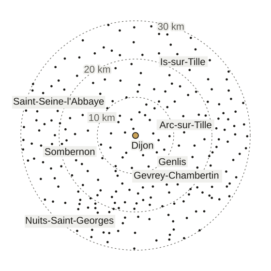

- Accueil
- Dijon et 30 km autour
Serrurier autour de Dijon, à 30 km à la ronde
Nous intervenons à Dijon et dans toutes les communes à 30 km au plus, de jour comme de nuit. Le prix de départ est le même partout.

Les communes, de la plus proche à la plus lointaine
Les distances se mesurent à vol d’oiseau du centre de Dijon au centre de la commune, d’après les données géographiques de l’État.
Voici les 258 communes du cercle de 30 km, Dijon comprise.
Si la vôtre y figure, nous venons chez vous de jour comme de nuit.
À moins de 5 kmAfficher les communesMasquer les communes
- Fontaine-lès-Dijon, 1,8 km
- Talant, 2,8 km
- Ahuy, 4,3 km
- Saint-Apollinaire, 4,7 km
De 5 à 10 kmAfficher les communesMasquer les communes
- Chenôve, 5,1 km
- Ruffey-lès-Echirey, 5,5 km
- Longvic, 5,5 km
- Daix, 5,7 km
- Bellefond, 5,9 km
- Quetigny, 6,2 km
- Asnières-lès-Dijon, 6,2 km
- Plombières-lès-Dijon, 6,4 km
- Hauteville-lès-Dijon, 6,6 km
- Marsannay-la-Côte, 6,7 km
- Sennecey-lès-Dijon, 7,1 km
- Corcelles-les-Monts, 7,3 km
- Varois-et-Chaignot, 7,8 km
- Chevigny-Saint-Sauveur, 8,4 km
- Perrigny-lès-Dijon, 8,5 km
- Norges-la-Ville, 8,6 km
- Bretigny, 8,7 km
- Ouges, 8,8 km
- Couternon, 8,9 km
- Neuilly-Crimolois, 9,1 km
- Velars-sur-Ouche, 9,3 km
- Orgeux, 9,5 km
- Couchey, 9,5 km
- Fénay, 9,8 km
De 10 à 20 kmAfficher les communesMasquer les communes
- Darois, 10,2 km
- Messigny-et-Vantoux, 10,3 km
- Flavignerot, 10,5 km
- Fixin, 10,6 km
- Prenois, 10,7 km
- Étaules, 10,8 km
- Clénay, 10,8 km
- Saint-Julien, 11,2 km
- Savigny-le-Sec, 11,5 km
- Brochon, 11,5 km
- Bressey-sur-Tille, 11,6 km
- Bretenière, 11,7 km
- Fauverney, 11,8 km
- Saulon-la-Rue, 11,8 km
- Magny-sur-Tille, 12,1 km
- Lantenay, 12,5 km
- Arc-sur-Tille, 12,7 km
- Gevrey-Chambertin, 13,0 km
- Marsannay-le-Bois, 13,1 km
- Rouvres-en-Plaine, 13,1 km
- Épagny, 13,3 km
- Arceau, 13,5 km
- Brognon, 13,6 km
- Fleurey-sur-Ouche, 13,6 km
- Barges, 13,7 km
- Izier, 13,8 km
- Flacey, 13,9 km
- Saulon-la-Chapelle, 14,1 km
- Val-Suzon, 14,3 km
- Saint-Philibert, 14,3 km
- Pasques, 14,8 km
- Saussy, 14,9 km
- Chambœuf, 15,2 km
- Broindon, 15,2 km
- Thorey-en-Plaine, 15,2 km
- Morey-Saint-Denis, 15,5 km
- Valforêt, 15,6 km
- Remilly-sur-Tille, 15,7 km
- Ancey, 15,8 km
- Urcy, 15,9 km
- Cessey-sur-Tille, 15,9 km
- Varanges, 16,2 km
- Chaignay, 16,4 km
- Pichanges, 16,6 km
- Curtil-Saint-Seine, 16,7 km
- Noiron-sous-Gevrey, 16,7 km
- Arcey, 16,8 km
- Marliens, 16,9 km
- Savouges, 17,0 km
- Curley, 17,0 km
- Chambolle-Musigny, 17,2 km
- Longecourt-en-Plaine, 17,3 km
- Beire-le-Châtel, 17,3 km
- Spoy, 17,3 km
- Magny-Saint-Médard, 17,4 km
- Genlis, 17,4 km
- Francheville, 17,7 km
- Panges, 17,7 km
- Gilly-lès-Cîteaux, 17,7 km
- Sainte-Marie-sur-Ouche, 17,7 km
- Épernay-sous-Gevrey, 17,8 km
- Binges, 18,0 km
- Mâlain, 18,1 km
- Gemeaux, 18,1 km
- Labergement-Foigney, 18,2 km
- Belleneuve, 18,3 km
- Vernot, 18,4 km
- Baulme-la-Roche, 18,4 km
- Vougeot, 18,4 km
- Reulle-Vergy, 18,5 km
- Corcelles-lès-Cîteaux, 18,5 km
- Villecomte, 18,7 km
- Semezanges, 18,9 km
- Savolles, 19,0 km
- Saint-Martin-du-Mont, 19,2 km
- Saint-Bernard, 19,2 km
- Prâlon, 19,3 km
- Flagey-Echézeaux, 19,5 km
- Viévigne, 19,5 km
- Gergueil, 19,6 km
- Izeure, 19,8 km
De 20 à 30 kmAfficher les communesMasquer les communes
- Blaisy-Haut, 20,0 km
- Chambeire, 20,0 km
- Vosne-Romanée, 20,0 km
- Tart-le-Bas, 20,1 km
- L’Étang-Vergy, 20,2 km
- Beire-le-Fort, 20,3 km
- Aiserey, 20,5 km
- Tellecey, 20,6 km
- Curtil-Vergy, 20,7 km
- Tart, 20,8 km
- Tanay, 20,8 km
- Ternant, 20,9 km
- Gissey-sur-Ouche, 21,0 km
- Agey, 21,0 km
- Savigny-sous-Mâlain, 21,1 km
- Longeault-Pluvault, 21,1 km
- Longchamp, 21,1 km
- Nuits-Saint-Georges, 21,2 km
- Diénay, 21,2 km
- Trochères, 21,2 km
- Villebichot, 21,3 km
- Trouhaut, 21,3 km
- Échigey, 21,3 km
- Cirey-lès-Pontailler, 21,4 km
- Marcilly-sur-Tille, 21,4 km
- Tarsul, 21,4 km
- Boncourt-le-Bois, 21,7 km
- Segrois, 21,7 km
- Étevaux, 21,8 km
- Vaux-Saules, 21,8 km
- Mesmont, 21,9 km
- Cuiserey, 22,1 km
- Saint-Seine-l’Abbaye, 22,1 km
- Bévy, 22,2 km
- Saint-Nicolas-lès-Cîteaux, 22,2 km
- Lux, 22,2 km
- Blaisy-Bas, 22,3 km
- Is-sur-Tille, 22,3 km
- Villars-Fontaine, 22,5 km
- Bessey-lès-Cîteaux, 22,5 km
- Collonges-et-Premières, 22,6 km
- Messanges, 22,6 km
- Pluvet, 23,0 km
- Courtivron, 23,0 km
- Collonges-lès-Bévy, 23,2 km
- Agencourt, 23,2 km
- Noiron-sur-Bèze, 23,3 km
- Mirebeau-sur-Bèze, 23,3 km
- Marandeuil, 23,3 km
- Remilly-en-Montagne, 23,5 km
- Bézouotte, 23,7 km
- Barbirey-sur-Ouche, 23,7 km
- Saint-Victor-sur-Ouche, 23,9 km
- Til-Châtel, 23,9 km
- Bussy-la-Pesle, 24,0 km
- Frénois, 24,0 km
- Bèze, 24,0 km
- Soirans, 24,1 km
- Saint-Léger-Triey, 24,1 km
- Saint-Jean-de-Bœuf, 24,2 km
- Meuilley, 24,4 km
- Chevannes, 24,4 km
- Saulx-le-Duc, 24,4 km
- Moloy, 24,5 km
- Aubigny-en-Plaine, 24,5 km
- Charmes, 24,6 km
- Champagny, 24,7 km
- Chaux, 24,7 km
- Sombernon, 24,8 km
- Tréclun, 24,9 km
- Turcey, 24,9 km
- Lamargelle, 25,1 km
- Grenant-lès-Sombernon, 25,2 km
- Drée, 25,2 km
- Quincey, 25,4 km
- Montot, 25,4 km
- Brazey-en-Plaine, 25,4 km
- Bligny-le-Sec, 25,4 km
- Détain-et-Bruant, 25,5 km
- Gerland, 25,5 km
- Échevannes, 25,5 km
- Magny-Montarlot, 25,5 km
- Arcenant, 25,7 km
- Champdôtre, 25,8 km
- Montmançon, 25,9 km
- Drambon, 26,0 km
- Verrey-sous-Drée, 26,2 km
- Lamarche-sur-Saône, 26,3 km
- Saint-Hélier, 26,4 km
- Premeaux-Prissey, 26,4 km
- Magny-lès-Aubigny, 26,6 km
- Villotte-Saint-Seine, 26,6 km
- Marey-lès-Fussey, 26,7 km
- Oisilly, 26,7 km
- Comblanchien, 26,7 km
- Trouhans, 26,8 km
- Cheuge, 26,9 km
- Blagny-sur-Vingeanne, 27,0 km
- Villers-la-Faye, 27,2 km
- Vieilmoulin, 27,2 km
- Échannay, 27,2 km
- La Bussière-sur-Ouche, 27,2 km
- Villey-sur-Tille, 27,3 km
- Pellerey, 27,3 km
- Villers-les-Pots, 27,4 km
- Véronnes, 27,4 km
- Fussey, 27,4 km
- Charrey-sur-Saône, 27,5 km
- Poncey-sur-l’Ignon, 27,5 km
- Champrenault, 27,5 km
- Pont, 27,6 km
- Bourberain, 27,6 km
- Vonges, 27,6 km
- Athée, 27,7 km
- Antheuil, 27,7 km
- Crécey-sur-Tille, 27,7 km
- Poiseul-lès-Saulx, 27,8 km
- Beaumont-sur-Vingeanne, 28,0 km
- Broin, 28,0 km
- Avelanges, 28,3 km
- Léry, 28,4 km
- Saint-Sauveur, 28,5 km
- Poncey-lès-Athée, 28,5 km
- Bonnencontre, 28,6 km
- Corgoloin, 28,8 km
- Marey-sur-Tille, 28,9 km
- Montoillot, 28,9 km
- Magny-lès-Villers, 29,0 km
- Charencey, 29,0 km
- Veuvey-sur-Ouche, 29,0 km
- Pontailler-sur-Saône, 29,0 km
- Maxilly-sur-Saône, 29,2 km
- Saint-Mesmin, 29,2 km
- Tillenay, 29,2 km
- Échevronne, 29,3 km
- Saint-Anthot, 29,3 km
- Chevannay, 29,3 km
- Orville, 29,3 km
- Verrey-sous-Salmaise, 29,3 km
- Renève, 29,4 km
- Bouilland, 29,5 km
- Dampierre-et-Flée, 29,5 km
- Argilly, 29,6 km
- Aubigny-lès-Sombernon, 29,6 km
- Esbarres, 29,7 km
- Le Meix, 29,8 km
- Salmaise, 29,9 km
- Saint-Usage, 30,0 km
Plus loin de Dijon, même prix de départ
30 km
à vol d’oiseau autour du centre de Dijon, de jour comme de nuit
À partir de 75 € TTC
pour une porte claquée en journée, à Talant comme à Nuits-Saint-Georges
Le prix final s’écrit sur un devis devant la porte. Le déplacement y est compris si vous l’acceptez.
Si vous le refusez, vous réglez le déplacement et le diagnostic.
Voir le barème completSur la zone, ce qu’on nous demande
Comment est mesurée la distance ?
Elle se mesure à vol d’oiseau entre le centre de Dijon et celui de votre commune. La route est toujours un peu plus longue.
On vous donne au téléphone une heure d’arrivée estimée. On vous rappelle si elle glisse.
Ma commune n’est pas dans la liste, mais elle est tout près : vous venez ?
Oui, si elle est à 30 km au plus du centre de Dijon : toutes ces communes sont desservies. Dites la vôtre dès le début de l’appel.
Vous venez aussi la nuit dans les communes autour ?
Oui, dans toute la zone. De nuit le serrurier remet la porte en état de fermer ; changer une serrure qui marche encore se propose de jour.
J’habite Auxonne ou Beaune : vous venez ?
Auxonne (32 km) et Beaune (37 km) sont hors de notre zone, comme le reste de la France pour l’instant.
Vous pouvez quand même appeler pour poser la question. La réponse peut être non.


Vous êtes dans la zone, et la porte est bloquée
Dites votre commune et ce qui coince dès le début de l’appel.
Appeler le [À CONFIRMER : numéro de téléphone]